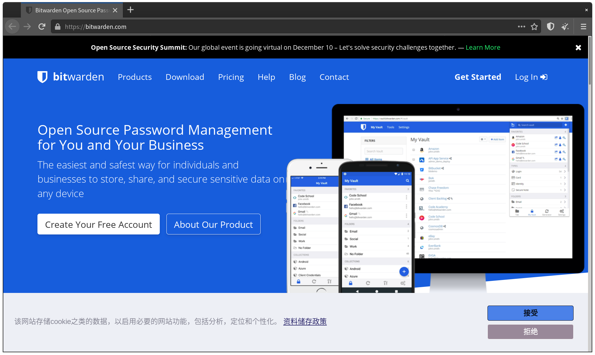
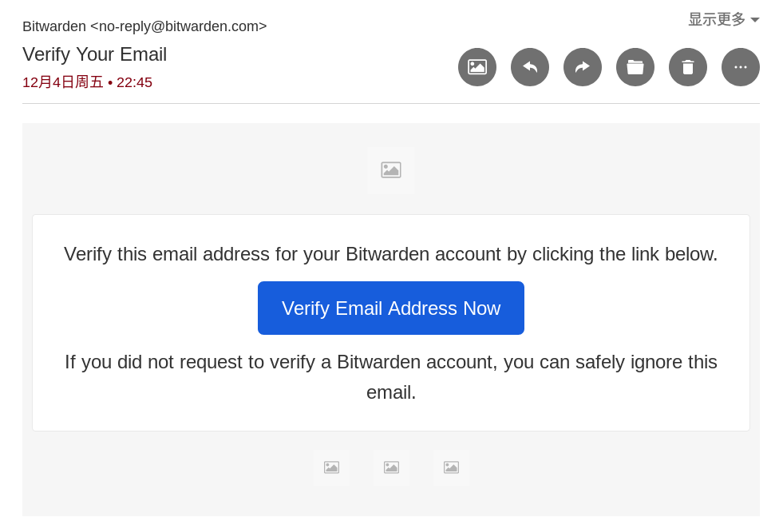
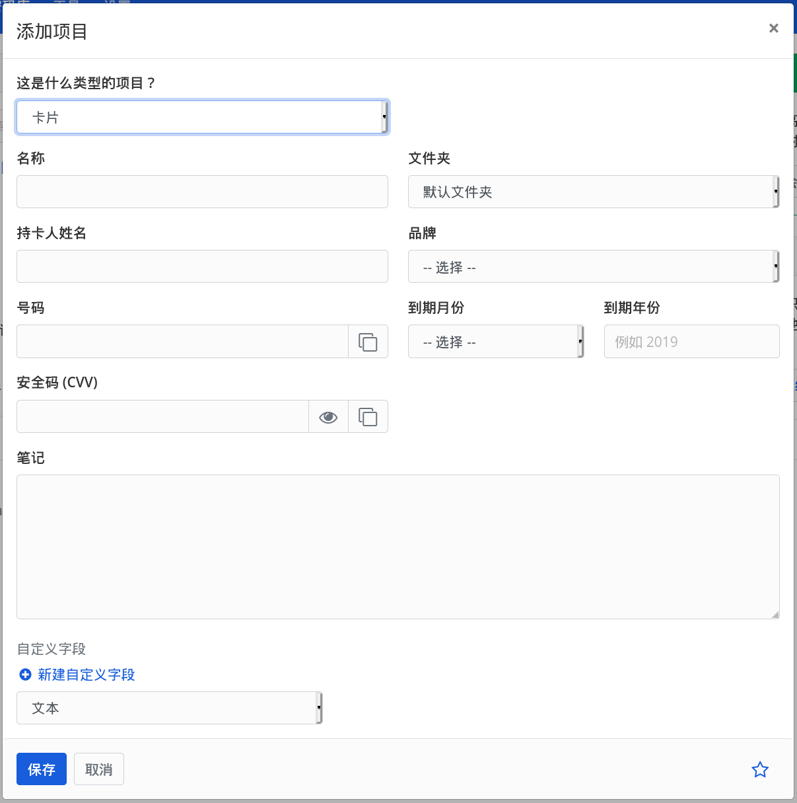
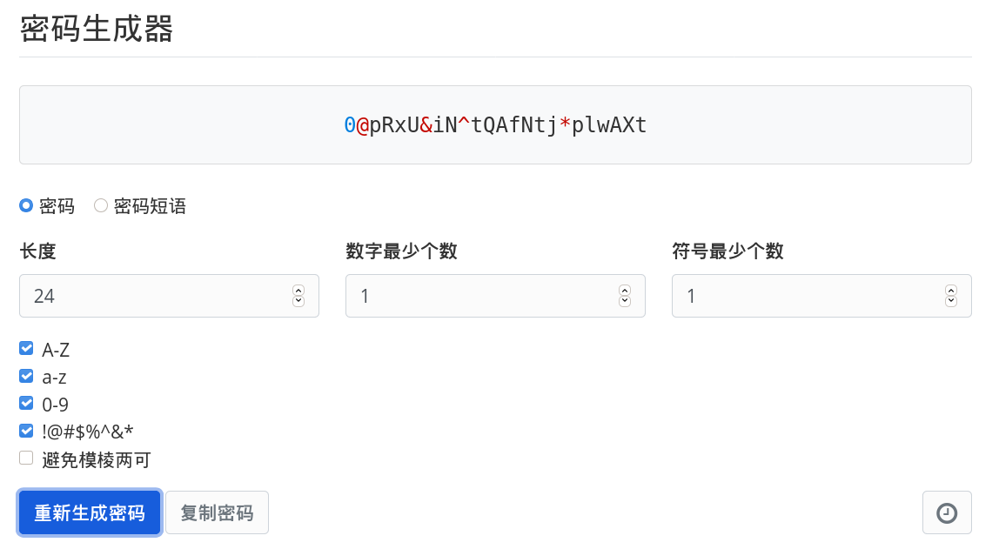

Bitwarden 网页版
Bitwarden 不怎么特别，但它拥有一个密码管理器应有的所有安全性和功能。It just Works.
开发者：Bitwarden, Inc. | 官方网站 | 源代码
客户端 GPLv3, 服务端 AGPLv3 和 Bitwarden EULA | 服务条款 | 隐私政策
回顾
上一章中 noarch 定义了一个合格的密码管理器，我们将要介绍的 Bitwarden 就是符合标准的一个。
它使用 AES-256 加密你的密码库，并将你的主密码使用加盐的 PBKDF2 SHA-256 形式存储，以保证密码库的零访问。零访问意味着你的密码库只在客户端被解密，就连 Bitwarden 的员工或可能搜查 Bitwarden 的警方都无法通过正常方式获取你的密码。
最重要的 - 它几乎全由自由软件组成。得益于此，如果你不信任 Bitwarden 官方云，你甚至可以自己搭建 Bitwarden 服务器，自己管理自己的数据；不过 noarch 不会在此教你如何自建 Bitwarden 服务器。
可能的疑问
本章要讲述的是 Bitwarden 的网页版密码库。
你可能会好奇，既然是网页，那么为什么 Bitwarden 说他们不能访问你的密码呢？
答案是 Javascript 的力量。Javascript 是网页在你浏览器中运行的“小程序”，浏览器会自动加载它们并运行。理论上，它们可以做任何需要“安装”的程序可以做的事，而不需要让你“安装”。
其实，privacy.noarch 就在使用 Javascript. 试着点击页面左上角的 ，你可以看到本书菜单的打开和关闭。得益于 Javascript, 这个菜单可以被显示或隐藏，并且开关的行为会展示动画。没有 Javascript, 这个菜单的开关动画需要在 privacy.noarch 的服务器中渲染并传输；对于 privacy.noarch 目前 (2020 年) 的浏览量而言可能可行，而对于 Google 等巨型服务，为数亿用户每人渲染视觉效果显然不现实。
Bitwarden 网页版在打开时会加载对应的 Javascript 程序，并且下载你的密码库。解锁和操作这个密码库的行为完全被已经加载到本地的 Javascript 完成，因此你不需要担心你的密码库未加密经过互联网传输。
注册帐号
Bitwarden 的注册非常简单明了。首先我们打开 Bitwarden 的官网 bitwarden.com:
如果你看到下方的 Cookie 提示，你可以直接点击“拒绝”。拒绝后 Bitwarden 网页版不会留下跨站 Cookie.

别被这个网页上的英文吓跑。虽然 Bitwarden 官网只有英文，但接下来我们操作的密码库具有中文翻译。
点击右上角的 Get Started 来注册帐号，你会被带到一个表格：

就像注册任何其它帐号一样，填写你的邮箱地址和名字。名字可以使用假名，就像这样：
不过等一下。你可能现在就在犯一个错误：在密码管理器上使用你之前用过的密码。
noarch 强烈反对这种行为。
请当场想出一个够强的密码，它最好有至少 15 位，拥有大小写字母、数字和符号...
到底怎么做啊！我想不出来！
人脑密码生成器
在我们把生成密码这件事交给密码管理器前，请想想你之前用过的密码。
noarch 就用过自己的名字首字母和生日；现在想起来最可怕的一个是直接使用用户名，加上其中几个字符用 Leet (1337) 替换成对应的符号和数字。
请别这样做。如果你使用这些能联系到个人身份，或是关于你的，长久有效的信息，例如 n0@rcH1sn0tgaYn0@rcH1sn0tgaY
所以 noarch 想要分享一下自己的密码“生成”思路，它用来“生成”你的密码管理器主密码：
这只是 noarch 的个人做法，提供给那些根本想不出来的读者。如果你有更好的主意，noarch 将会非常感谢你的贡献。
- 像 noarch 之前讲的，避开任何自己的长期信息。任何“最喜欢的”也要避开。
- 想想自己最近做的事情、读的书、看的电影或是玩过的游戏。
- 如果适用，你也可以想想这些书、游戏或电影中发生的事。
- 把它们写下来。noarch 最近在读 Richard Stallman 的传记 Free as in Freedom.
- 用 1337 编码它。这样它就包含了数字和符号。
- 加上一些非常易变的数字。比如你“生成”密码时的时间，或是你现在在使用的某个软件版本号。noarch 在“生成”这个密码时的时间是下午 5:40.
- 把它夹在第4步得出的内容中间某个位置。
经过这样一个步骤，noarch 写出了一个这样的密码：
如果你有任何其它主意，你还可以把它和 noarch 的方法结合在一起！例如你还可以把最后的 Freed.m 倒序成 m.deerF, 得出最终结果 fR3e@s!n1740m.deerF. 现在你就得到了一个基本没人猜得出来，并且机器也难以爆破的主密码，用于加密你的 Bitwarden 密码库。
别担心，noarch 当然不会将上述密码进行实际使用，你也绝对不要真用上述的示例密码。
最后，你可以选择提供一个密码提示；当你真的忘记密码时，你可以请求 Bitwarden 将它发送到你的邮箱里。
密码提示是明文存储的，并且另一款密码管理器 LastPass 曾经发生的数据泄露中就包含密码提示。因此，请不要在内填写有关自己的信息。例如 noarch 简单地在这里写了
GNU, 因为GNU就是密码中提到的“自由软件”概念开创者之一。
记住密码
如果你从来没有尝试记忆过 fR3e@s!n1740Freed.m 这么强的密码，那么你可能会在创建完帐号后一瞬间就忘掉你刚才创建的密码。
不过，既然我们使用的密码是有规律的，那么经过一定的练习，你一定可以记住。
你现在可以将你的主密码写在一张纸上，然后放在一个安全的地方，就像你原来用小本子记密码一样。直到你能不假思索输入这个密码为止，你都会需要参考它，以防止你在这段学习期间内忘掉密码。
请确保这张纸可以被轻易摧毁。因此，也请避开你“不舍得”摧毁的记事本。严禁使用可擦笔，因为可擦笔即使擦掉后也会留下痕迹，或是被冰箱冷冻层的温度复原。
在记住后，请将纸张摧毁到至少纤维级别。常见的方法有烧毁或泡水捣碎。
在学习区间内，严禁使用任何电子方式存储你的主密码。这样做会使密码管理器失去其意义。
当你想好并写下了密码，你就可以阅读并同意 Bitwarden 的服务条款和隐私政策了。

最后，点击“提交”来注册。
登录、验证，并和密码保险箱说声好
在点击“提交”后，你会被带到登录界面。你需要在这里再次输入你的密码：
因为密码管理器的安全特性，Bitwarden 不像许多服务一样可以“记住密码”。你只能选择“记住邮件”，并手工输入密码。如果你不想每次访问密码库都输入密码，你可以安装 Bitwarden 客户端或浏览器插件。
登录后，你就进入了 Bitwarden 密码库。

在我们开始将密码放入 Bitwarden 之前，你可能注意到了右上角的“验证电子邮件”提示。我们现在就来解决这个问题。
打开你用来注册 Bitwarden 的电子邮件账户；你应该会看到一个“欢迎”邮件。

现在回到 Bitwarden 密码库，在“验证电子邮件”里点“发送电子邮件”。

然后你会在邮箱里看到一封用于验证的 "Verify Your Email" 邮件，其中包含一个 "Verify Email Address Now" 按钮。

取决于你的邮件客户端安全设置，这封邮件可能会像上图一样无法正常加载。不用担心，这个按钮能在不加载远程内容的情况下工作。
noarch 推荐像 Thunderbird 或 Tutanota 这样拦截远程内容的邮件客户端 / 提供商，它们能帮你阻挡大部分来自邮件的恶意软件，并防止邮件发送者通过远程请求追踪你。
在确认来源地址是 no-reply@bitwarden.com 后，点击这个按钮，你会被带到一个有提示的登录页面。
在这里再次登录，然后你就可以正式开始使用 Bitwarden 了。

添加你的第一条密码
在 Bitwarden 存储密码同样简单明了。
不过，如果你在密码管理器存储以前重复使用的密码，它将失去意义。所以 noarch 将在这演示为 Tutanota 邮箱使用 Bitwarden 生成并保存密码。
要让 Bitwarden 为你保存密码，点击“添加项目”。

然后你可以在这填写你的帐号名称（服务）、用户名/邮箱，以及登录时的网址 (URI)。
虽然 URI 是可选的，但 noarch 建议你填写它。URI 有两个用途：
- 用于获取这个帐号的图标，并展示在 Bitwarden 密码库内。
- 用于自动填写。这个会在你使用 Bitwarden 浏览器插件或手机应用时有用。
除了密码之外的字段填完后是这样：
接下来你就可以点击“密码”字段上方的 按钮来生成密码。生成的密码会自动填写到“密码”字段里。
点击 可以用明文查看密码，再次点击 可以将其恢复到隐藏状态。

点击 ，这个密码就会被复制到剪贴板。

接下来，你需要登录你要修改密码的帐号，然后找到修改密码的入口：

输入你的旧密码，然后粘贴新密码。只是一个普通的密码修改过程。
修改完密码后，回到 Bitwarden, 在密码表单点击“保存”。你会被带回“我的密码库”。

读取密码管理器中的密码
在“我的密码库”中点击对应帐号的项目，你就可以查看刚刚在编辑的表单，在其中进行任何操作。
以登录账户为例，在“密码”字段点击 ，然后在要登录服务的密码框粘贴。
如果你有太多账户，你可以使用左侧的“筛选器”。使用筛选器后，只有符合搜索结果的项目会显示在右侧。
登录 Bitwarden
当你关闭浏览器、闲置一段时间，或是手动退出 Bitwarden, 你将需要重新登录密码库。
完全关闭浏览器
如果你完全关闭浏览器，你需要重新登录 Bitwarden. 访问 bitwarden.com, 然后 "Log In":
你就可以输入你的主密码，然后登录进入密码库了。
锁定
当你打开 Bitwarden 网页密码库一段时间闲置不用（默认 15 分钟），Bitwarden 会自动“锁定”：

同样，输入密码然后“ 解锁”就可以了。
进阶功能
下面是一些 noarch 认为一般人可能不会用到的功能，但也会在这做介绍。
存储信用卡、身份、以及笔记
Bitwarden 还可以用来存储信用卡和身份。搭配 Bitwarden 浏览器插件或手机应用使用时，Bitwarden 可以帮你自动填写这些表单。
添加它们的方法和添加密码类似，只不过需要填写的信息不同。你可以通过“这是什么类型的项目？”在这些模式中切换。
作为例子，下面是 Bitwarden 存储信用卡信息的表单。

这些其它类型的表单使用与密码表单相同的方式加密，因此 Bitwarden 无法将你存储在内的信用卡或护照信息作为它用。
修改密码生成器强度
当你在 Bitwarden 密码表单中点击 , Bitwarden 默认生成长度为 14 位，包含数字与大小写字母的密码, 就像这样：
WkRUdb6LRqF8sC
Bitwarden 这样做是为了保证最大兼容性，因为有些服务不支持密码中包含符号。
不过 noarch 以及一些其它密码管理器，例如 KeepassXC 认为这样生成的密码强度不够高。因此，如果你有需要，可以调节 Bitwarden 密码生成器参数。
在 Bitwarden 密码库顶栏点击 工具 -> 密码生成器，你应该能看见一个专门的密码生成器：
在这里你可以调节密码类型、长度、包含的字符集以及每种字符最小个数。noarch 建议你将密码生成器调成这样。现在它长度为 24 位，包含完整的 [A-Za-z0-9!@#$%^&*].

导入密码库
如果你之前在使用其它“密码管理器”，例如 Chrome 浏览器的“保存密码”功能，你可以将保存在那里的密码导入 Bitwarden.

在 Bitwarden 密码库 工具 -> 导入数据，你可以选择对应的导入来源。Bitwarden 贴心地 为不同来源提供了英文教程。
以 Chrome 为例，在选择后，Bitwarden 会给你展示对应的教程链接。

跟随 Bitwarden 提供的教程，你就可以从各大密码管理器或“密码管理器”无痛换到 Bitwarden 了。
导出密码库
如果你想从 Bitwarden 换到其它密码管理器，你也可以这么做：

Bitwarden 可以将你的密码库导出为 json 或 csv 格式，它们可以进一步被导入到 KeepassXC 或任何支持导入这些格式的密码管理器。
修改账户设置
如果你不慎泄露了主密码 (noarch 希望你绝对不要)，或你的邮箱被盗，在伤害发生前请立刻在 Bitwarden 内修改对应的设置。
你可以进入 设置 -> 我的账户 修改这些设置。无论是修改邮箱地址或是主密码，你都需要确认当前的主密码。
总结
你现在应该能够顺利使用 Bitwarden 管理你的密码了。
虽然目前你的 Bitwarden 密码库内只存有一个帐号，不过你可以在之后使用某个没有存入 Bitwarden 的帐号时下意识将它存入 Bitwarden 并通过上述方法改密码。
密码管理器的使用时间越久，它对你提供的便利和安全性越大；noarch 希望你不要被刚开始的麻烦吓跑，因为它在长期使用后是你的得力助手。